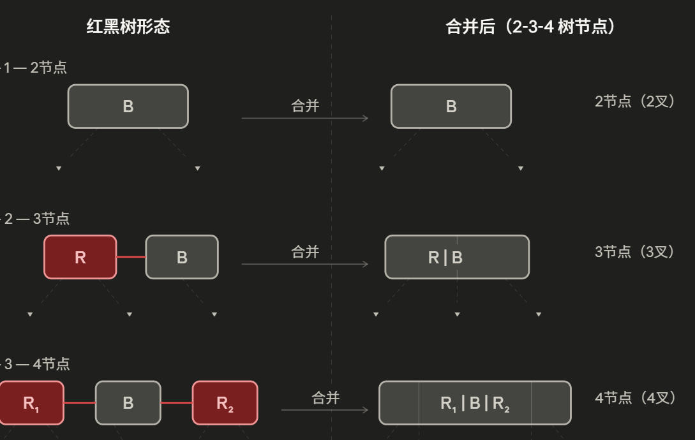

tree-algo
常见树结构详解：从二叉树到 B+ 树
本文系统梳理九种常见树结构的定义、核心算法与复杂度分析，覆盖二叉系列与多叉系列
目录
二叉系列
多叉系列
总结
1. 二叉树 Binary Tree
定义
二叉树是每个节点最多有两个子节点（左子节点与右子节点）的树形结构，是后续所有变体的基础。
1 | 1 |
核心性质
- 满二叉树：每个节点要么是叶节点，要么有两个子节点
- 完全二叉树：除最后一层外所有层满，且最后一层节点靠左排列
- 深度为 h 的二叉树：最多有 $2^{h+1} - 1$ 个节点
遍历算法
二叉树的三种 DFS 遍历时间复杂度均为 $O(n)$，空间复杂度为 $O(h)$（递归栈深度等于树高）。
1 | def inorder(node): # 中序：左 → 根 → 右 |
BFS（层序遍历）使用队列实现，时间与空间复杂度均为 $O(n)$。
复杂度小结
| 操作 | 时间复杂度 | 空间复杂度 |
|---|---|---|
| 遍历 | $O(n)$ | $O(h)$ |
| 求高度 | $O(n)$ | $O(h)$ |
2. 二叉搜索树 BST
定义
BST 在二叉树基础上增加了排序约束：对任意节点，其左子树所有节点的值均小于该节点，右子树所有节点的值均大于该节点。
1 | 5 |
核心操作
查找：从根出发，值小则走左，值大则走右，直到命中或到达叶节点。
1 | def search(node, target): |
插入：沿查找路径走到空位，在此插入新节点。
删除：分三种情况处理：
- 叶节点 → 直接删除
- 只有一个子节点 → 用子节点替换
- 有两个子节点 → 用中序后继（右子树最小值）替换，然后删除后继节点
复杂度分析
BST 的复杂度取决于树的高度 $h$：
| 场景 | 树高 $h$ | 查找/插入/删除 |
|---|---|---|
| 平均（随机插入） | $O(\log n)$ | $O(\log n)$ |
| 最坏（有序插入） | $O(n)$ | $O(n)$ |
最坏情况下 BST 退化为链表，这正是自平衡树存在的意义。
3. AVL 树（二叉平衡树）
定义
AVL 树由 Adelson-Velsky 和 Landis 于 1962 年提出，是第一种自平衡二叉搜索树。其核心约束是：任意节点的左右子树高度差（平衡因子）的绝对值不超过 1。
旋转操作
当插入或删除导致某节点平衡因子失衡（$|\text{bf}| = 2$）时，通过旋转恢复平衡。共四种情况：
LL 旋转（右旋）：新节点插入到失衡节点左子树的左侧
1 | z y |
RR 旋转（左旋）：新节点插入到失衡节点右子树的右侧，与 LL 对称。
LR 旋转（左-右双旋）：先对左子节点左旋，再对根节点右旋。
RL 旋转（右-左双旋）：先对右子节点右旋，再对根节点左旋。
1 | def right_rotate(z): |
复杂度分析
高度上界：含 $n$ 个节点的 AVL 树，高度 $h \leq 1.44 \log_2(n+2) - 0.328$，约为 $1.44 \log n$。
这是因为高度为 $h$ 的 AVL 树至少包含 $N(h)$ 个节点，满足：
其增长率类似斐波那契数列，因此 $h = O(\log n)$ 得证。
| 操作 | 时间复杂度 | 备注 |
|---|---|---|
| 查找 | $O(\log n)$ | 严格保证 |
| 插入 | $O(\log n)$ | 最多旋转 $O(\log n)$ 次 |
| 删除 | $O(\log n)$ | 最多旋转 $O(\log n)$ 次 |
| 空间 | $O(n)$ | 每个节点存高度（一个整数） |
AVL 树是三种自平衡树中查找性能最优的，因为它维持了最严格的平衡条件，树高最低。
4. 红黑树 Red-Black Tree
定义与五条性质
红黑树是一种近似平衡的 BST，通过节点染色（红/黑）来约束树高。必须满足：
- 每个节点是红色或黑色
- 根节点是黑色
- 所有叶节点（NIL 哨兵节点）是黑色
- 红色节点的两个子节点必须是黑色（不存在连续红节点）
- 从任意节点到其所有叶节点的路径，经过的黑色节点数量相同（黑高相同）
为什么红黑树高度有界？
由性质 4 和 5 可得：最长路径（红黑交替）不超过最短路径（全黑）的 2 倍。
设黑高为 $bh$，则：
- 最短路径长度 ≥ $bh$
- 最长路径长度 ≤ $2 \cdot bh$
因此树高 $h \leq 2 \cdot bh \leq 2 \log_2(n+1)$，即 $h = O(\log n)$。
插入操作
新节点染为红色（不破坏黑高），然后根据叔节点颜色修复：
- Case 1：叔节点为红色 → 父、叔变黑，祖父变红，向上递归
- Case 2：叔节点为黑色，新节点为内侧子节点 → 先旋转为 Case 3
- Case 3：叔节点为黑色，新节点为外侧子节点 → 旋转 + 换色，结束
插入最多只需要 2 次旋转，而 AVL 树插入可能需要 $O(\log n)$ 次旋转，这是红黑树在写密集场景下更受欢迎的关键原因。
复杂度分析
| 操作 | 时间复杂度 | 旋转次数上限 |
|---|---|---|
| 查找 | $O(\log n)$ | 0 |
| 插入 | $O(\log n)$ | 2 次 |
| 删除 | $O(\log n)$ | 3 次 |
| 空间 | $O(n)$ | 每节点 1 bit 颜色 |
与 AVL 树的对比
| 维度 | AVL 树 | 红黑树 |
|---|---|---|
| 平衡严格度 | 严格（平衡因子绝对值 ≤ 1） | 宽松（h ≤ 2 log n） |
| 查找性能 | 略优（树更矮） | 略逊 |
| 插入/删除旋转 | $O(\log n)$ 次 | $O(1)$ 次 |
| 工程应用 | 读多写少 | 读写均衡（更通用） |
红黑树是工程中使用最广泛的平衡树，C++ STL 的 std::map/std::set、Java 的 TreeMap、Linux 内核的进程调度器均采用红黑树实现。
如果把红色的节点合并到它的父亲里，可以发现实际上红黑树就是一个2-3-4叉树。

5. Splay 树
定义
Splay 树由 Sleator 和 Tarjan 于 1985 年提出。它是一种自调整 BST，不维护额外的平衡信息，而是在每次访问后通过 Splay 操作将目标节点旋转到根。
Splay 操作的三种情况
设目标节点为 $x$，父节点为 $p$，祖父节点为 $g$：
Zig（$p$ 是根）：对 $x$ 做一次单旋，直接到达根。
Zig-Zig（$x$ 和 $p$ 同向，即同为左/右子节点）：先旋转 $p$，再旋转 $x$。这是 Splay 树与普通旋转到根的关键区别。
1 | g x |
Zig-Zag（$x$ 和 $p$ 异向）：连续旋转 $x$ 两次（先旋 $x$ 一次，再旋 $x$ 一次）。
均摊复杂度分析（势能法）
Splay 树的单次操作最坏为 $O(n)$，但均摊为 $O(\log n)$。使用势能函数（Potential Function）证明：
定义节点 $v$ 的秩为 $r(v) = \log s(v)$，其中 $s(v)$ 是以 $v$ 为根的子树节点数。势能定义为：
可以证明，每次 Splay 操作的均摊代价满足：
因此 $m$ 次操作的总代价为 $O(m \log n)$，单次均摊 $O(\log n)$。
访问局部性优势
Splay 树的一个重要性质是工作集定理（Working Set Theorem）：如果某元素最近第 $t$ 次被访问，则本次访问代价为 $O(\log t)$。
这意味着对于访问模式有局部性的场景（如缓存、LRU），Splay 树的实际性能可以远好于 $O(\log n)$。
复杂度小结
| 操作 | 均摊时间 | 最坏单次 | 额外空间 |
|---|---|---|---|
| 查找 | $O(\log n)$ | $O(n)$ | $O(1)$ |
| 插入 | $O(\log n)$ | $O(n)$ | $O(1)$ |
| 删除 | $O(\log n)$ | $O(n)$ | $O(1)$ |
Splay 树实现最简单（无需存储额外信息），但不适合对单次操作有严格时间要求的实时系统。
6. KD 树
定义
KD 树（K-Dimensional Tree）由 Jon Bentley 于 1975 年提出，用于组织 $k$ 维空间中的点，支持高效的最近邻搜索和范围查询。
构建算法
以二维为例，KD 树按维度交替划分空间：
- 选择当前层的划分维度（第 $d = \text{depth} \mod k$ 维）
- 找到该维度的中位数作为根节点（保证树高平衡）
- 左子树存所有该维度值 < 中位数的点，右子树存 > 中位数的点
- 递归构建
1 | def build_kdtree(points, depth=0): |
构建时间复杂度：每层排序 $O(n \log n)$，共 $O(\log n)$ 层，总计 $O(n \log^2 n)$。若使用线性时间选择算法，可降至 $O(n \log n)$。
最近邻搜索
KD 树的最近邻搜索结合了 BST 搜索和剪枝：
- 沿划分维度找到目标点所在的叶节点
- 回溯时，若另一侧子树的分割超平面距目标点小于当前最近距离，则必须进入该子树搜索
- 否则剪枝跳过
1 | 搜索目标点 q，当前最近点 best，最近距离 best_dist |
复杂度分析
| 操作 | 平均时间 | 最坏时间 | 备注 |
|---|---|---|---|
| 构建 | $O(n \log n)$ | $O(n \log n)$ | |
| 最近邻查询 | $O(\log n)$ | $O(n)$ | 低维数据表现好 |
| 范围查询（结果 $k$ 个） | $O(k + \sqrt{n})$ | $O(n)$ | 二维情况 |
| 空间 | $O(n)$ | $O(n)$ |
维度诅咒（Curse of Dimensionality）
KD 树在低维（$k \leq 20$）时效果显著，但随维度增加，剪枝效率急剧下降——高维空间中分割超平面离查询点几乎总是”很近”，导致几乎不能剪枝，退化为 $O(n)$ 的暴力搜索。
经验法则：当 $n \gg 2^k$ 时，KD 树才有明显优势（$n$ 为数据点数，$k$ 为维度数）。高维场景可考虑 Ball Tree 或近似最近邻算法（如 HNSW）。
7. B 树
背景与动机
二叉树的节点只存一个键、最多两个子节点。当数据量达到亿级并存储在磁盘上时，树高直接决定磁盘 I/O 次数——每次访问一个节点就是一次磁盘读取，代价高达毫秒级。
B 树（Balanced Tree，也称 B-Tree）于 1970 年由 Bayer 和 McCreight 提出，核心思想是让每个节点存放更多键，从而大幅压低树高，减少磁盘 I/O。
定义（$m$ 阶 B 树）
一棵 $m$ 阶 B 树满足：
- 每个节点最多有 $m$ 个子节点
- 非根非叶的内部节点至少有 $\lceil m/2 \rceil$ 个子节点
- 根节点至少有 2 个子节点（除非树只有根一个节点）
- 含 $k$ 个子节点的节点恰好有 $k-1$ 个键，且键有序
- 所有叶节点在同一层
1 | [17 | 35] |
高度分析
含 $n$ 个键的 $m$ 阶 B 树，高度 $h$ 满足：
以 $m = 1000$ 为例，存储 $10^9$ 条记录时，$h \leq \log_{500}(5 \times 10^8) \approx 3.2$，即树高不超过 4 层，最多 4 次 I/O 即可完成查找。相比之下，同量级的 BST 树高约为 30，差距悬殊。
插入与分裂
B 树插入始终插入到叶节点，若叶节点已满（$m-1$ 个键），则分裂：
- 取中间键（第 $\lceil m/2 \rceil$ 个）上推到父节点
- 左右各形成一个新节点
- 若父节点因此也满，继续向上递归分裂
1 | def split_child(parent, i, full_child, m): |
复杂度分析
| 操作 | 时间复杂度 | I/O 次数 |
|---|---|---|
| 查找 | $O(\log n)$ | $O(\log_m n)$ |
| 插入 | $O(\log n)$ | $O(\log_m n)$ |
| 删除 | $O(\log n)$ | $O(\log_m n)$ |
| 空间 | $O(n)$ | — |
注意区分比较次数（$O(m \log_m n) = O(\log n)$，因为每个节点内还要二分查找）和 I/O 次数（$O(\log_m n)$，远小于 BST 的 $O(\log n)$）。
8. B+ 树
与 B 树的核心区别
B+ 树是 B 树的变体，在数据库和文件系统中比 B 树更为普遍（MySQL InnoDB、PostgreSQL 均使用 B+ 树）。关键差异：
| 特性 | B 树 | B+ 树 |
|---|---|---|
| 数据存储位置 | 内部节点和叶节点均存数据 | 只有叶节点存数据 |
| 内部节点作用 | 存键+数据，用于导航 | 只存键，纯路由 |
| 叶节点连接 | 无 | 叶节点形成有序链表 |
| 范围查询 | 需回溯到公共祖先再遍历 | 直接顺序扫描叶链表 |
| 同等内存下扇出 | 较小 | 更大（内部节点更紧凑） |
1 | B+ 树结构示意（内部节点只存键，叶节点存键+数据并链接）： |
为什么数据库更偏爱 B+ 树？
原因一：更大的扇出
内部节点不存数据，只存键（通常是整数或短字符串），每个磁盘页能容纳更多键，扇出 $m$ 更大，树高进一步降低。
以一个磁盘页 16KB、每个键 8 字节、每个指针 8 字节为例：
- B 树内部节点：键+数据（假设数据 100 字节）→ 扇出约 $16384 / 116 \approx 141$
- B+ 树内部节点：只存键+指针 → 扇出约 $16384 / 16 \approx 1024$
扇出差距直接导致树高差距。
原因二：范围查询极高效
SELECT * WHERE age BETWEEN 20 AND 30 这类范围查询，B+ 树只需找到 20 对应的叶节点，然后沿链表顺序扫描到 30，全程顺序 I/O，效率极高。B 树则需要反复回溯到公共祖先，产生大量随机 I/O。
原因三：全表扫描友好
叶节点链表天然支持全量数据的顺序扫描，不需要遍历整棵树。
复杂度分析
| 操作 | 时间复杂度 | 备注 |
|---|---|---|
| 点查找 | $O(\log_m n)$ | I/O 次数，比 B 树略多一层（数据只在叶） |
| 插入 | $O(\log_m n)$ | 同 B 树，分裂只在叶和内部节点间传播 |
| 删除 | $O(\log_m n)$ | 下溢时从兄弟借键或合并 |
| 范围查询（结果 $k$ 条） | $O(\log_m n + k)$ | 定位 + 顺序扫描 |
删除操作（下溢处理）
删除后若叶节点键数低于下限 $\lceil m/2 \rceil - 1$，需修复：
- 向兄弟借键：若左/右兄弟有多余键，借一个过来（同时更新父节点中的分隔键）
- 合并节点：若兄弟也刚好在下限，将当前节点与兄弟合并，并从父节点删除分隔键，递归向上处理
1 | def fix_underflow(node, parent, idx, m): |
9. Trie 树（字典树）
定义
Trie（发音同”try”，源自 retrieval）是专门为字符串集合设计的多叉树。每条从根到叶（或标记节点）的路径对应一个字符串，路径上每条边代表一个字符。
1 | 插入 ["cat", "car", "card", "care", "bat"] 后： |
Trie 的关键性质：公共前缀只存储一次，天然支持前缀共享。
节点结构
1 | class TrieNode: |
核心操作
插入：
1 | def insert(self, word: str): |
查找（精确匹配）：
1 | def search(self, word: str) -> bool: |
前缀查询：
1 | def starts_with(self, prefix: str) -> bool: |
复杂度分析
设字符串长度为 $L$，字符集大小为 $\Sigma$（如英文小写字母 $\Sigma = 26$），字符串总数为 $n$。
| 操作 | 时间复杂度 | 空间复杂度 | 备注 |
|---|---|---|---|
| 插入 | $O(L)$ | — | 与 $n$ 无关 |
| 查找 | $O(L)$ | — | 与 $n$ 无关 |
| 前缀查询 | $O(L)$ | — | 仅需遍历前缀 |
| 空间 | — | $O(n \cdot L \cdot \Sigma)$ | 最坏情况，无共享前缀 |
Trie 的查找时间与字符串数量 $n$ 完全无关，只取决于字符串本身的长度 $L$——这是哈希表之外少有的能做到这一点的结构。
空间优化变体
压缩 Trie（Patricia Trie / Radix Tree）：将不分叉的链状路径压缩为单个节点，存整个子串而非单个字符。可将空间从 $O(n \cdot L \cdot \Sigma)$ 压缩到 $O(n)$ 个节点。
1 | 普通 Trie: r → e → s → t （4个节点） |
Double Array Trie：用两个数组 base[] 和 check[] 表示 Trie，空间极为紧凑，是搜索引擎、输入法词典的常用实现（如 MeCab、结巴分词的底层）。
典型应用
- 搜索引擎的自动补全：输入前缀，返回所有匹配词
- 输入法词典：快速前缀匹配候选词
- IP 路由表：最长前缀匹配（使用二进制 Trie，每位 0/1）
- 拼写检查：单词是否存在 + 相似词推荐
- 字符串排序：Trie 的中序遍历即字典序排序
10. 横向对比与选型建议
复杂度全景
| 树结构 | 查找 | 插入 | 删除 | 空间 | 平衡策略 |
|---|---|---|---|---|---|
| 二叉树 | $O(n)$ | $O(n)$ | $O(n)$ | $O(n)$ | 无 |
| BST | $O(\log n)$均摊 | $O(\log n)$均摊 | $O(\log n)$均摊 | $O(n)$ | 无 |
| AVL 树 | $O(\log n)$ | $O(\log n)$ | $O(\log n)$ | $O(n)$ | 严格平衡 |
| 红黑树 | $O(\log n)$ | $O(\log n)$ | $O(\log n)$ | $O(n)$ | 近似平衡 |
| Splay 树 | $O(\log n)$均摊 | $O(\log n)$均摊 | $O(\log n)$均摊 | $O(n)$ | 自调整 |
| KD 树 | $O(\sqrt{n})$均摊 | $O(\log n)$ | $O(\log n)$ | $O(n)$ | 按维度划分 |
| B 树 | $O(\log_m n)$ I/O | $O(\log_m n)$ I/O | $O(\log_m n)$ I/O | $O(n)$ | 分裂/合并 |
| B+ 树 | $O(\log_m n)$ I/O | $O(\log_m n)$ I/O | $O(\log_m n)$ I/O | $O(n)$ | 分裂/合并 |
| Trie | $O(L)$ | $O(L)$ | $O(L)$ | $O(n \cdot L \cdot \Sigma)$ | 天然前缀树 |
- BST 和 Splay 树的 $O(\log n)$ 为均摊复杂度，AVL 和红黑树为最坏情况保证。
- B 树/B+ 树的复杂度以磁盘 I/O 次数衡量，$m$ 为扇出（通常达数百至千量级）。
- Trie 中 $L$ 为字符串长度，$\Sigma$ 为字符集大小。
选型建议
内存中的有序映射（读写均衡） → 红黑树
插入/删除旋转次数有 $O(1)$ 上界，工程实现成熟。C++ STL map/set、Java TreeMap、Linux 内核调度器的首选。
内存中的有序映射（读多写少） → AVL 树
严格平衡使树高最低，查找性能最优，适合字典、符号表等读取密集场景。
访问有局部性/热点明显 → Splay 树
热点数据自动浮到根，重复访问代价极低。适用于缓存、LRU、编译器符号表。
磁盘存储的有序索引（点查询为主） → B 树
高扇出大幅压低树高，减少磁盘 I/O。适合文件系统目录、键值数据库（如 LMDB）。
磁盘存储的有序索引（范围查询频繁） → B+ 树
叶节点链表让范围查询只需一次定位 + 顺序扫描，是关系型数据库（MySQL InnoDB、PostgreSQL）的标准选择。
字符串前缀搜索 / 自动补全 → Trie 树
查找时间与字符串数量无关，天然支持前缀枚举。适合输入法词典、搜索自动补全、IP 路由表最长前缀匹配。
多维空间查询（低维） → KD 树
最近邻搜索、范围查询的首选，维度超过 20 建议换用 Ball Tree 或近似最近邻算法（HNSW）。
需要保证实时响应 → 避免 Splay 树
Splay 树单次操作最坏 $O(n)$，不适合对延迟有硬性要求的实时系统，应选 AVL 或红黑树。
参考资料
- Sleator, D. D., & Tarjan, R. E. (1985). Self-Adjusting Binary Search Trees. JACM.
- Bentley, J. L. (1975). Multidimensional Binary Search Trees Used for Associative Searching. CACM.
- Bayer, R., & McCreight, E. M. (1972). Organization and Maintenance of Large Ordered Indices. Acta Informatica.
- CLRS. Introduction to Algorithms, Chapter 12–13, 18（BST、红黑树与 B 树）.
- Knuth, D. E. The Art of Computer Programming, Vol. 3（排序与查找）.
- Fredkin, E. (1960). Trie Memory. CACM.